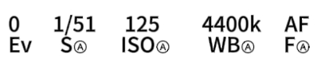

如果执着得够久，故事就一定能迎来好结局
原站寄语01 / THE LITTLE THINGS
把喜欢，定格在这一页。
一张照片，一小段歌声，都是想珍藏的瞬间。
每一种笑容，
都想好好记住。
87张原站图片
67 组珍藏
67 组珍藏

ILLUSTRATION · PHOTOGRAPHY · MEMORIES每份喜欢，连同创作者的名字一起珍藏。

03 / STAY A LITTLE LONGER
再坐一小会儿？
真的，只一小会儿。 · 本站原创寄语
如果执着得够久，故事就一定能迎来好结局
原站寄语01 / THE LITTLE THINGS
一张照片，一小段歌声，都是想珍藏的瞬间。
每一种笑容，
都想好好记住。

03 / STAY A LITTLE LONGER
真的，只一小会儿。 · 本站原创寄语